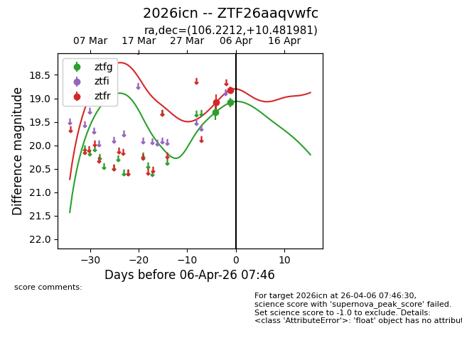
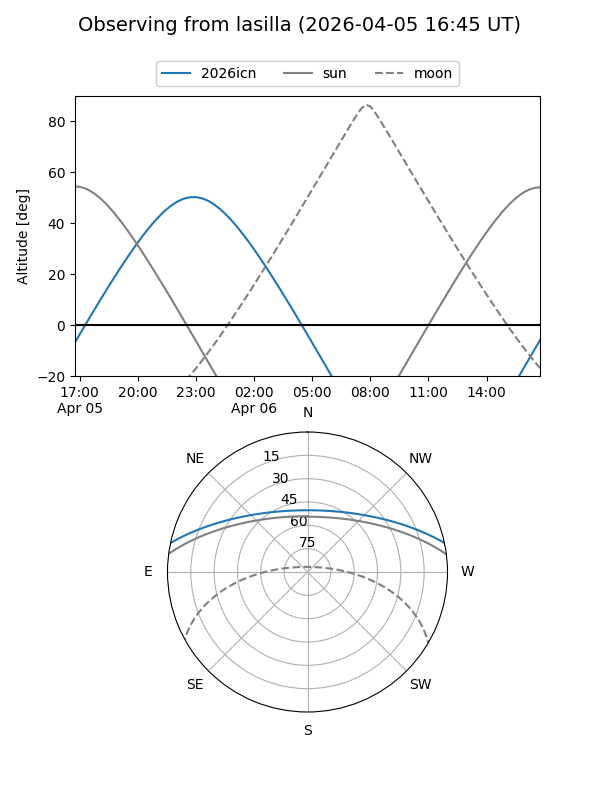
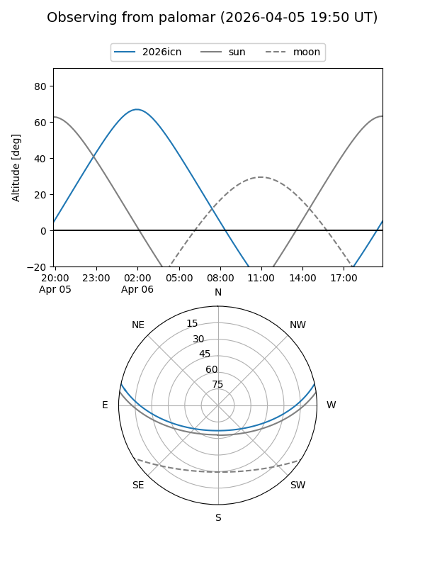
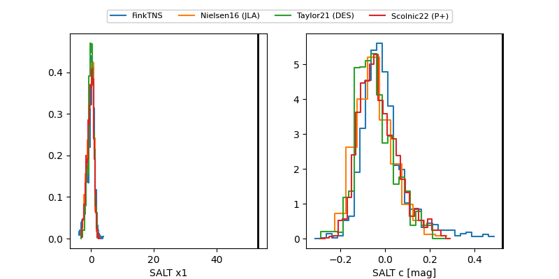

2026icn
Target 2026icn at 2026-04-06 07:50
Aliases and brokers:
FINK: link
Lasair: link
ALeRCE: link
TNS: link
YSE: link
alt names
ZTF26aaqvwfc (ztf,fink_ztf)
2026icn (tns,yse)
Coordinates:
equatorial (ra, dec) = 106.2212,+10.48198
equatorial (HMS+DMS) = 07:04:53.08,+10:28:55.13
galactic (l, b) = (205.0658,+7.71654)
Flags:
Photometry:
last ztfg=19.09, ztfr=18.82
2 ztfg, 2 ztfr detections
Lightcurve

Visibility


Additional plots
